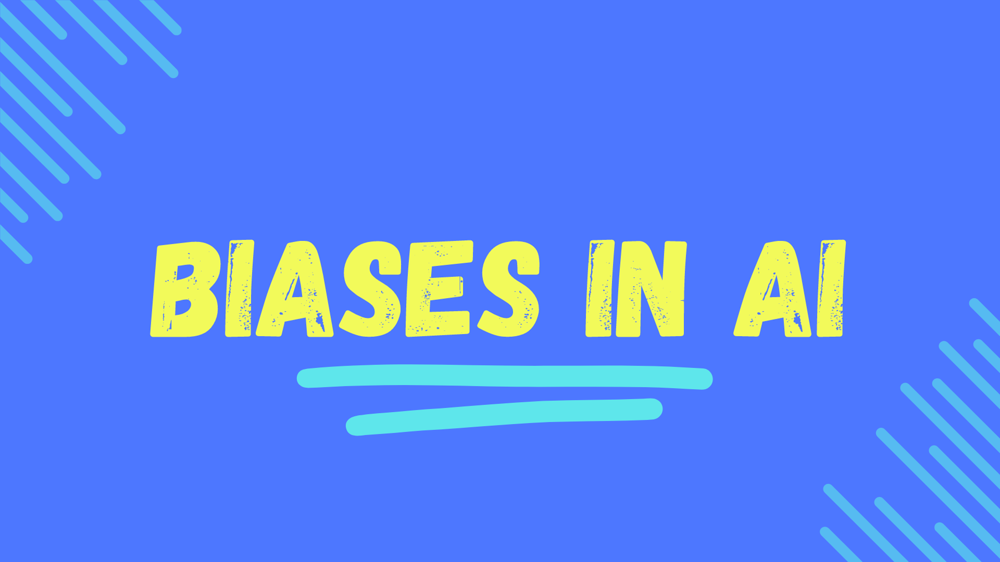
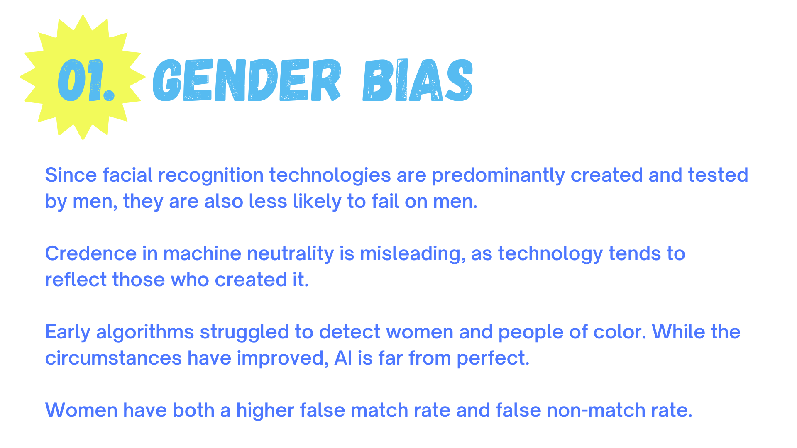
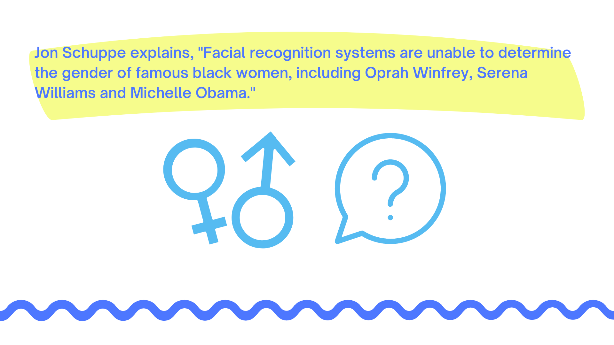
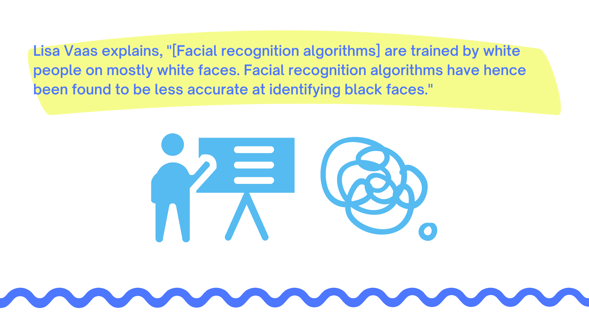
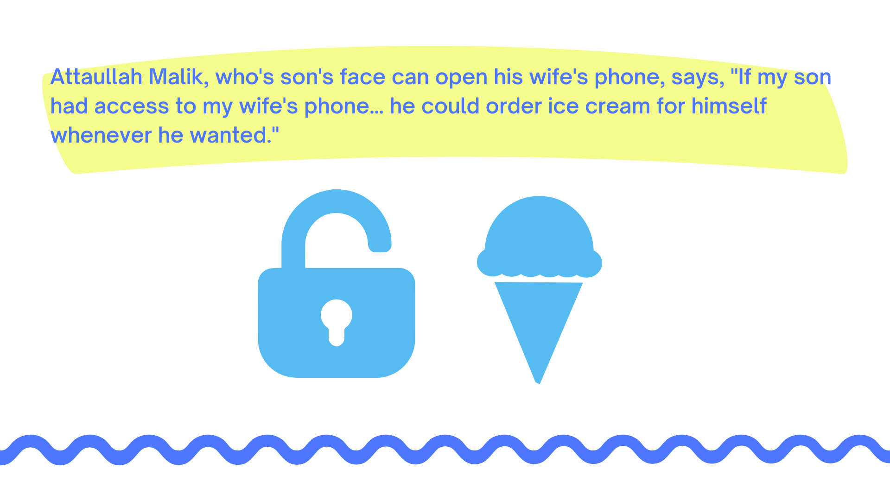
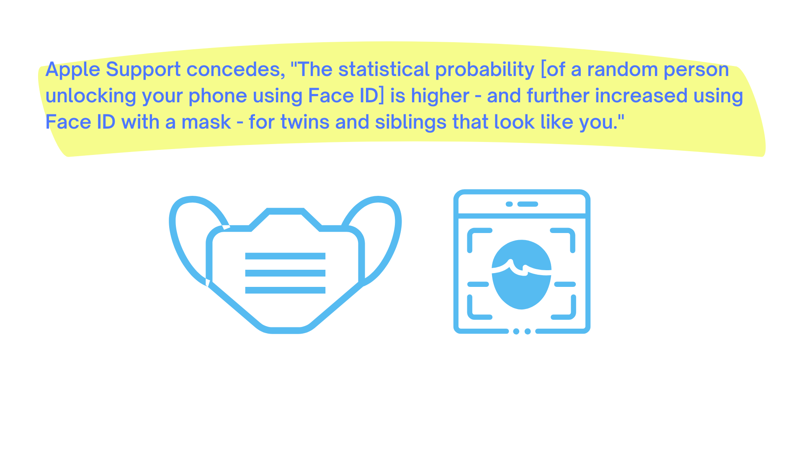

Facing Bias
How It Works
Biases in AI
Improving AI
Future Of AI
Our Story
Community
Solutions
Careers
References






![2) Racial Bias: While working on a project at MIT, Dr. Joy Buolamwini's face could not be detected by facial analysis software as easily as her peers with lighter skin. Facial recognition can be used to surveil and target people of color. Since African Americans, Latinos, and immigrants have a higher likelihood of being included in mugshot databases, these people are more likely to be 'findable' by facial recognition technology. Training data often does not contain diverse subjects, so facial recognition technology struggles to distinguish the faces of people with darker skin.](assets/racialBias.png)
![3) Age Bias: Face ID is more likely to fail on young people. Children under the age of 13 are more susceptible to false matches since their facial features have not fully developed yet. Additionally, some kids can access their parent's devices. If a child is a spitting image of their parent, they might be able to unlock their parent's phone. This raises additional privacy concerns.If someone isn't aware another person can log into their device, the intruder could uncover private information unbeknownst to the victim.](assets/ageBias.png)